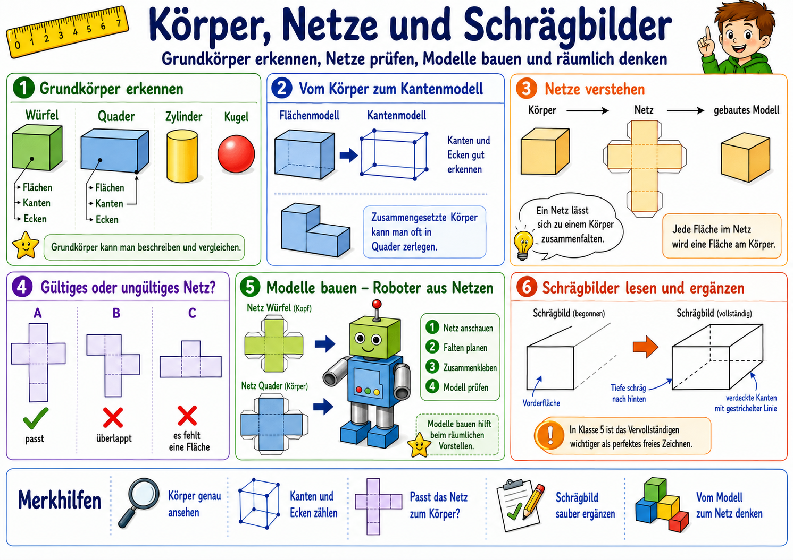
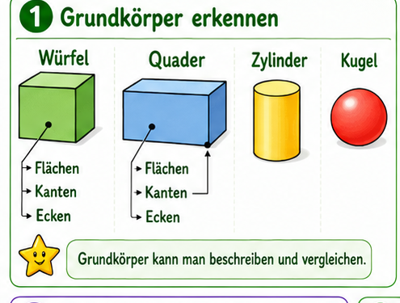

Dieses Modul verbindet Grundkoerper, Kantenmodelle, Netze, Modellbau und Schraegbilder.
Schwerpunkt ist das raeumliche Vorstellungsvermoegen: Objekt -> Kantenmodell -> Netz -> gebautes Modell -> Schraegbild.

Leitgrafik fuer das Modul. In der Lernreise arbeiten wir abschnittsweise mit einzelnen Bildausschnitten.
Eigenes Lernkonzept fuer Klasse 5
Didaktischer Aufbau nach deinem Kontext: vom realen Koerper zur Darstellung und wieder zurueck.
So bleibt der Schwerpunkt auf Raumvorstellung statt auf frueher Formalisierung.
1. Koerper erkennen
Wuerfel, Quader und weitere Grundkoerper mit Fachbegriffen beschreiben.
2. Kantenmodell lesen
Kanten, Ecken und Flaechenbeziehungen im Drahtmodell erkennen.
3. Netze pruefen und bauen
Gueltige Netze unterscheiden und in echte Modelle ueberfuehren.
4. Schraegbild sichern
Schraegbilder lesen und begonnene Darstellungen korrekt ergaenzen.
Slice-Explorer (wie in den Geschichtsmodulen)
Klicke auf eine Station und arbeite gezielt mit dem passenden Bildteil.

Lehrplanbezug (Niedersachsen, Gymnasium 5/6)
Grundkoerper charakterisieren und in der Umwelt identifizieren.
Kantenmodelle nutzen, Netze entwerfen und Modelle herstellen.
Schraegbilder von Wuerfeln/Quadern lesen, vergleichen und sinnvoll ergaenzen.
Zusammengesetzte Koerper auf bekannte Koerper zurueckfuehren.
Jede Runde ist neu. Die Aufgaben bleiben altersgemaess: klar strukturiert, visuell unterstuetzt
und in drei Schwierigkeitsstufen.
Abschluss-Check (dynamisch)
12 gemischte Fragen, direktes Feedback, bei jedem Start neu kombiniert.
Punkte: 0 / 12
Noch nicht gestartet.
Klicke auf "Check starten".
Reflexion fuer Lernkontrolle
1. Erklaere den Unterschied zwischen Flaechenmodell, Kantenmodell und Netz.
2. Beschreibe, woran du ein gueltiges Wuerfelnetz erkennst.
3. Erklaere, welche Kanten im Schraegbild gestrichelt dargestellt werden und warum.